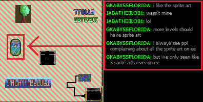

You are not logged in.
Announcement
#1 2015-02-03 22:29:11
- Vulcan
- Member

- Registered: 2010-12-13
- Posts: 263
- Website
Get Facebook linked account back? Account has been deleted for years.
Hello I use to play way back when beta was any donated amount. And I believe it was within the first year of the game being made.
When I had signed up, I had signed up with my Facebook account and had since deleted it. After a few weeks of the account deleted, it permanently deletes now, so I can no longer log in to everybody edits without it. I quit years ago because of this, and at the time there was no possible solution.
Is there any possible way of getting the account back, or anyone I can contact? I really miss playing on that account and had a sort of reputation at the time on the account for my art, even.
Any help would be appreciated, thank you ~
Meow
Offline
#2 2015-02-03 23:01:16
- Pingohits
- Member

- From: 360 no scope mlg pro
- Registered: 2013-05-16
- Posts: 1,321
- Website
Re: Get Facebook linked account back? Account has been deleted for years.
what is your account names?
the before and now
Offline
#3 2015-02-03 23:15:07
- Vulcan
- Member
- Registered: 2010-12-13
- Posts: 263
- Website
Re: Get Facebook linked account back? Account has been deleted for years.
what is your account names?
the before and now
Thank you for replying. It was called Vulcan, and was my only account.
Meow
Offline
#4 2015-02-03 23:15:39
- Master1
- Member

- From: Earth
- Registered: 2010-12-03
- Posts: 3,888
Re: Get Facebook linked account back? Account has been deleted for years.
!!!! VULCAN! You're alive!!
I'm pretty sure there isn't a way to get it back right now, but there might be in the near future. I could talk to the guardians for you.

Offline
#5 2015-02-03 23:33:32
- Vulcan
- Member
- Registered: 2010-12-13
- Posts: 263
- Website
Re: Get Facebook linked account back? Account has been deleted for years.
!!!! VULCAN! You're alive!!
I'm pretty sure there isn't a way to get it back right now, but there might be in the near future. I could talk to the guardians for you.
hello !! I had talked to RPG Two years ago and at the time they weren't able to do anything as well thank you.
Meow
Offline
#6 2015-02-04 00:52:25
- Different55
- Burritosaur

- Registered: 2010-08-18
- Posts: 11,170
Re: Get Facebook linked account back? Account has been deleted for years.
I'd still give emailing the EE people about it just to see. There's no harm in trying, right? I think the current eestaff email is [email protected], but I haven't played EE for about as long as you have.
Confirmed worse than hitler and imprisoned for 9 zillion yearz ;_;
Online
#7 2015-02-04 02:17:47
- Pingohits
- Member
- From: 360 no scope mlg pro
- Registered: 2013-05-16
- Posts: 1,321
- Website
Re: Get Facebook linked account back? Account has been deleted for years.
we need you back
you have the type of art ee would love
Offline
#8 2015-02-04 12:02:45
- 912468
- Member

- Registered: 2014-12-07
- Posts: 58
- Website
Re: Get Facebook linked account back? Account has been deleted for years.
You can send an email to nvd or jawapa and ask them if they can get your account back.
Offline
#9 2015-02-04 15:39:57
- Pingohits
- Member
- From: 360 no scope mlg pro
- Registered: 2013-05-16
- Posts: 1,321
- Website
Re: Get Facebook linked account back? Account has been deleted for years.
^secret mod confirmed
proof:
new account
eurpoean
cool username
weird email
uses emoticons
1 POST AND ONLY TO HELP
Offline
#10 2015-02-04 15:48:32
- some man
- Member

- From: Fiddling with the napkins
- Registered: 2012-03-30
- Posts: 5,959
Re: Get Facebook linked account back? Account has been deleted for years.
I'm also known as NVD in-game.
he is a mod, indeed
it's just not a secret
Much sig for you.
I said much sig for you.
Offline
#11 2015-02-04 16:32:12
- Vulcan
- Member
- Registered: 2010-12-13
- Posts: 263
- Website
Re: Get Facebook linked account back? Account has been deleted for years.
Thank you for the help everyone.
^secret mod confirmed
proof:
new account
eurpoean
cool username
weird email
uses emoticons
1 POST AND ONLY TO HELP
They must have deleted their post because I can't see it . What did it say?
Meow
Offline
#12 2015-02-04 18:29:19
- skullz16
- Member

- From: UK
- Registered: 2012-01-08
- Posts: 2,726
Re: Get Facebook linked account back? Account has been deleted for years.
Removed.
idk what to put here
Offline
#13 Yesterday 04:16:06
- XxAtillaxX
- Administrator

- From: 127.0.0.1
- Registered: 2011-01-20
- Posts: 2,640
- Website
Re: Get Facebook linked account back? Account has been deleted for years.
I'm removing the completely irrelevant posts.
Create a new topic if you wish to whine and groan about the moderation, so I can promptly close it and store it in it's rightful place: Topic Graveyard.
»contact[TeamViewer: ( atila~ );, E-Mail: ( [email protected] );#~] [note] Feel free to contact me.
-*--*--*--*--*--*--*--*--*--*--*--*--*--*--*--*--*--*--*--*--*--*--*--*--*--*--*--*--*--*--*--*-*-*
Offline